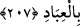

günahlar sebebiyle gurûr ve kibir kendisini yakalar.” Cahillikten kaynaklanan
hamiyeti ve kendisindeki kibir onu, yasak kılınan günah ve suçlara yöneltir. Veya
içindeki kibir onu sırf inad olsun diye nasihatçının sözünü kabûl etmemeye sevkeder.
Cezâ olarak cehennem ona yeter. Yaptığına karşılık cehenneme girmesi ve ebedî olarak
orada kalması ona kâfidir. Ne dehşetli bir tehdît! Vallahi cehennem ne kötü bir yataktır.
Abdullah b. Mes’ûd der ki: Allah katında en büyük günahlardan biri de: “Allah’dan
kork” denilen kimsenin: “Sen kendine bak” demesidir.
Hz. Ömer’e “Allah’dan kork” denilince hemen Allah’a karşı olan tevâzuundan
yanağını yere koymuştur. Yukarıda geçen âyet-i kerîme’de Cenâb-ı Hak, dînini dünyâsı
için fedâ eden kimselerin hallerini beyân etmişti. Şimdi de, canını ve malını din için ve
Hak katında kıyâmet günü elde edeceği şeyler için bezledenlerin durumlarını beyân
etmek için buyurur ki:
207. İnsanlardan öyleleri de var ki, Allah’ın rızâsını almak için kendini ve malını
fedâ eder. Allah da kullarına şefkatlidir.
İnsanlar içinde öyleleri de vardır ki, nefsini; canını satar. Kişi, oruç tutarak, namaz
kılarak, hac ve cihâd gibi tâatlara kendisini verip de Hak Teâlâ’nın lütuf ve ihsânını
kazanırsa, sanki Hak Teâlâ’nın mükâfâtları karşısında canını satmış gibi olacağından,
âyet-i kerîme’de “canını satar” tabiri kullanılmıştır. Burada alıcı ise “Allah Teâlâ”dır.
Kulunun canını, ona verdikleri sevap ve mükâfât karşılığında satın almıştır. Kulun bu
satıştan gâyesi Allah’ın rızâsını elde etmek, O’nun kendisinden râzı olmasını istemektir.
Allah kullara karşı pek şefkatlidir. İşte bu sebepledir ki, onları takvâ ile mükellef
tutmuş ve onlara sevap elde etmelerini lutfetmiştir. Kullarına olan şefkat ve
merhametinin bir tecellisi de onların mallarını ve canlarını -kendisinin tam bir mülkü
olmasına rağmen- sayı ve hesâba gelmez lütuf ve ihsânıyla, sanki onların kendi
mülkleriymiş gibi onlardan satın almasıdır. Bunu da lütuf, kerem ve ihsan olarak
yapmıştır.
Bu âyet-i kerîme’nin, Suheyb (r.a.) hakkında nâzil olduğu söylenmiştir. Bu sahâbî,
Medîne-i Münevvere’de Rasûl-i Ekrem (s.a.)’e kavuşmak için yaşı yüze ulaşmasına
rağmen Mekke’den hicret etmek niyetiyle çıkmıştı. Kureyş müşriklerinden bir gurup
peşine düşerek Suheyb’in beraberinde olanları öldürdüler. Suheyb’in beraberinde bir
mikdar oku vardı. Gayet keskin nişancı idi. Onlara dedi ki:
“Ey Kureyş cemâati! Bildiğiniz gibi içinizde en iyi ok atanlardanım. Vallahi, ben oku
adamın kalbine oturturum. Allah’a yemin ederim ki, okluğumdaki bütün oklar bitmeden
ve elimdeki kılıcım tamamen kırılıp parçalanmadan yanıma yaklaşamazsınız. Bundan